In [1]cell 3
import matplotlib.pyplot as plt
import numpy as np
from scipy.cluster.hierarchy import dendrogram, linkage
from scipy.spatial.distance import pdist, squareform
from sklearn.cluster import AgglomerativeClustering
# A clean and consistent style for every chart in this lesson
plt.style.use("seaborn-v0_8-whitegrid")
plt.rcParams.update({"figure.figsize": (9, 5.5), "font.size": 11})
# Each row is one observation with two features.
points = np.array([
[5, 3], [10, 15], [15, 12], [24, 10], [30, 30],
[85, 70], [71, 80], [60, 78], [70, 55]
])
point_names = [f"P{i}" for i in range(1, len(points) + 1)]
print(f"Dataset shape: {points.shape[0]} points and {points.shape[1]} features")Output
Dataset shape: 9 points and 2 features
In [2]cell 5
fig, ax = plt.subplots()
ax.scatter(
points[:, 0], points[:, 1],
s=130, color="#4C78A8", edgecolor="white", linewidth=1.5
)
for name, (x, y) in zip(point_names, points):
ax.annotate(name, (x, y), xytext=(7, 7), textcoords="offset points")
ax.set(
title="The original data: no cluster labels yet",
xlabel="Feature 1",
ylabel="Feature 2"
)
ax.set_xlim(0, 95)
ax.set_ylim(0, 90)
plt.show()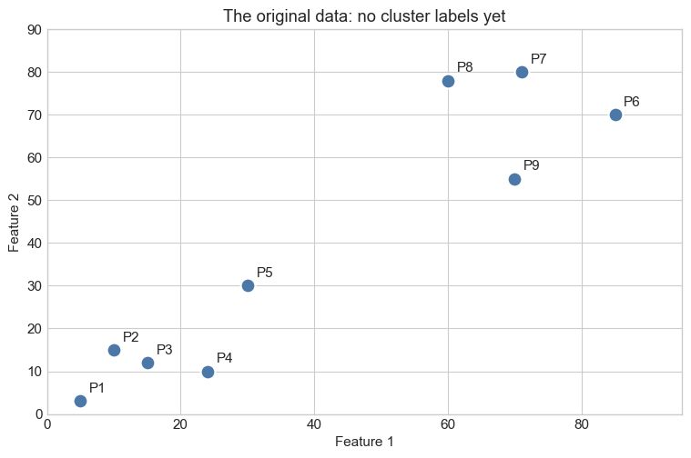
In [3]cell 8
# "Who is near me?" -> measure it with a right-angle triangle.
p1, p2 = points[2], points[4] # P3 and P5
walk_across = p2[0] - p1[0]
walk_up = p2[1] - p1[1]
straight_line = np.hypot(walk_across, walk_up)
fig, ax = plt.subplots(figsize=(9.5, 6))
# The two sides you can walk, and the straight line you actually want.
ax.plot([p1[0], p2[0]], [p1[1], p1[1]], color="#54A24B", linewidth=3)
ax.plot([p2[0], p2[0]], [p1[1], p2[1]], color="#F58518", linewidth=3)
ax.plot([p1[0], p2[0]], [p1[1], p2[1]], color="#E45756", linewidth=3.5, zorder=4)
ax.scatter(*p1, s=260, color="#4C78A8", edgecolor="white", linewidth=2, zorder=5)
ax.scatter(*p2, s=260, color="#4C78A8", edgecolor="white", linewidth=2, zorder=5)
ax.annotate("P3 = (x1, y1)", p1, xytext=(-18, -28), textcoords="offset points", fontweight="bold")
ax.annotate("P5 = (x2, y2)", p2, xytext=(-15, 16), textcoords="offset points", fontweight="bold")
label = dict(arrowprops=dict(arrowstyle="->", linewidth=1.6), fontsize=10.5,
bbox=dict(boxstyle="round,pad=0.45", facecolor="white", edgecolor="#B8C0CC"))
ax.annotate(f"1. Walk across\n x2 - x1 = {walk_across}",
xy=((p1[0] + p2[0]) / 2, p1[1]), xytext=(16, -60), textcoords="offset points",
color="#3B7A34", **label)
ax.annotate(f"2. Then walk up\n y2 - y1 = {walk_up}",
xy=(p2[0], (p1[1] + p2[1]) / 2), xytext=(22, -6), textcoords="offset points",
color="#B35A0F", **label)
ax.annotate(f"3. But the distance we want\n is the straight line: {straight_line:.2f}",
xy=((p1[0] + p2[0]) / 2, (p1[1] + p2[1]) / 2), xytext=(-160, 42),
textcoords="offset points", color="#B03A39", **label)
ax.text(0.03, 0.87, r"$D=\sqrt{(x_2-x_1)^2+(y_2-y_1)^2}$", transform=ax.transAxes,
ha="left", va="center", fontsize=15,
bbox=dict(boxstyle="round,pad=0.6", facecolor="#F3F6FA", edgecolor="#B8C0CC"))
ax.set(title="Distance = the straight line between two points",
xlabel="Feature 1", ylabel="Feature 2")
ax.set_xlim(5, 45); ax.set_ylim(0, 40)
plt.show()
print(f"Walk across : {walk_across}")
print(f"Walk up : {walk_up}")
print(f"Distance D : {straight_line:.2f}")Output
Walk across : 15 Walk up : 18 Distance D : 23.43
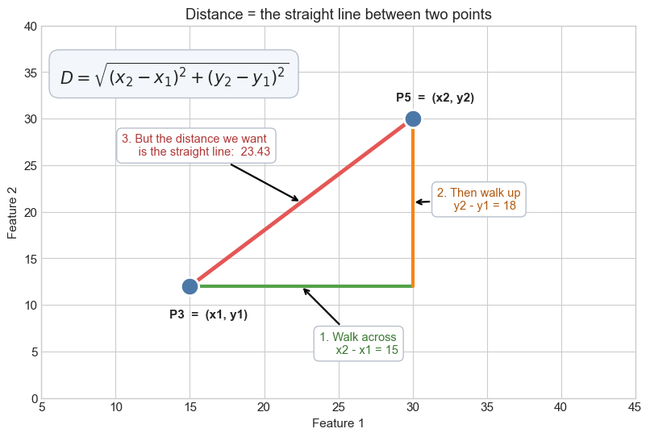
In [4]cell 10
# Calculate the straight-line (Euclidean) distance between every pair.
distance_matrix = squareform(pdist(points, metric="euclidean"))
np.fill_diagonal(distance_matrix, np.inf) # A point should not match with itself.
first_i, first_j = np.unravel_index(np.argmin(distance_matrix), distance_matrix.shape)
closest_distance = distance_matrix[first_i, first_j]
fig, ax = plt.subplots()
ax.scatter(points[:, 0], points[:, 1], s=90, color="#C7CDD4")
ax.scatter(
points[[first_i, first_j], 0], points[[first_i, first_j], 1],
s=170, color="#F58518", edgecolor="white", linewidth=1.5,
label="Closest pair"
)
ax.plot(
points[[first_i, first_j], 0], points[[first_i, first_j], 1],
linestyle="--", color="#F58518", linewidth=2
)
for name, (x, y) in zip(point_names, points):
ax.annotate(name, (x, y), xytext=(7, 7), textcoords="offset points")
ax.set(
title="The first merge: join the closest two points",
xlabel="Feature 1", ylabel="Feature 2"
)
ax.legend()
plt.show()
print(
f"Closest pair: {point_names[first_i]} and {point_names[first_j]} "
f"(distance = {closest_distance:.2f})"
)Output
Closest pair: P2 and P3 (distance = 5.83)
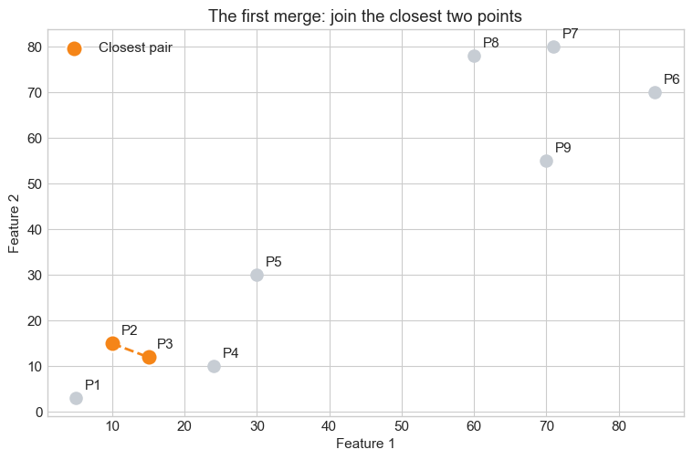
In [5]cell 12
from matplotlib.patches import FancyBboxPatch
trio = np.array([[2.0, 2.0], [5.0, 2.6], [4.0, 6.2]])
trio_names = ["A", "B", "C"]
d_ab = np.linalg.norm(trio[0] - trio[1])
d_ac = np.linalg.norm(trio[0] - trio[2])
d_bc = np.linalg.norm(trio[1] - trio[2])
fig, (ax_map, ax_tree) = plt.subplots(1, 2, figsize=(14, 6))
# ---------- LEFT: the town map, with the two handshakes drawn as boxes ----------
ax_map.add_patch(FancyBboxPatch(
(1.05, 1.15), 4.9, 2.35, boxstyle="round,pad=0.28",
facecolor="#FFF1E5", edgecolor="#F58518", linewidth=2.5, zorder=1))
ax_map.add_patch(FancyBboxPatch(
(0.75, 0.85), 5.5, 6.1, boxstyle="round,pad=0.28",
facecolor="none", edgecolor="#4C78A8", linewidth=2.5, linestyle="--", zorder=1))
for (x, y), name in zip(trio, trio_names):
ax_map.scatter(x, y, s=520, color="#3B4A5F", edgecolor="white", linewidth=2.5, zorder=6)
ax_map.text(x, y, name, color="white", fontsize=14, fontweight="bold",
ha="center", va="center", zorder=7)
for (i, j), dist, name in [((0, 1), d_ab, "d1"), ((0, 2), d_ac, "d2"), ((1, 2), d_bc, "d3")]:
strongest = name == "d1"
ax_map.plot(trio[[i, j], 0], trio[[i, j], 1],
linestyle="--", linewidth=3 if strongest else 1.6,
color="#E45756" if strongest else "#8995A7", zorder=3)
mid = trio[[i, j]].mean(axis=0)
ax_map.text(mid[0], mid[1] + 0.16, f"{name} = {dist:.2f}",
ha="center", fontsize=11, fontweight="bold" if strongest else "normal",
color="#B03A39" if strongest else "#5F6B7C",
bbox=dict(boxstyle="round,pad=0.25", facecolor="white", edgecolor="none", alpha=.85))
tag = dict(arrowprops=dict(arrowstyle="->", linewidth=1.6), fontsize=10.5,
bbox=dict(boxstyle="round,pad=0.4", facecolor="white", edgecolor="#B8C0CC"))
ax_map.annotate("d1 is the smallest,\nso A and B shake hands FIRST",
xy=(3.5, 2.3), xytext=(-30, -78), textcoords="offset points",
color="#B03A39", **tag)
ax_map.annotate("Handshake 1\ncluster {A, B}",
xy=(5.9, 3.3), xytext=(24, 10), textcoords="offset points",
color="#B35A0F", **tag)
ax_map.annotate("Handshake 2\nC joins them -> one cluster {A, B, C}\nThe story ends here.",
xy=(6.2, 6.4), xytext=(-52, 30), textcoords="offset points",
color="#2F5D9E", **tag)
ax_map.set(title="The town map: who shakes hands, and in what order",
xlabel="Feature 1", ylabel="Feature 2")
ax_map.set_xlim(0, 9.4); ax_map.set_ylim(0, 8.6)
# ---------- RIGHT: the same two handshakes, drawn as the diary ----------
trio_link = linkage(trio, method="average", metric="euclidean")
tree = dendrogram(trio_link, labels=trio_names, ax=ax_tree,
above_threshold_color="#4C78A8", color_threshold=0)
for coll in ax_tree.collections:
coll.set_linewidth(2.6)
first_bar = min(zip(tree["dcoord"], tree["icoord"]), key=lambda t: max(t[0]))
last_bar = max(zip(tree["dcoord"], tree["icoord"]), key=lambda t: max(t[0]))
ax_tree.annotate(f"Handshake 1: A + B\njoined at height {max(first_bar[0]):.2f} (they were close)",
xy=(np.mean(first_bar[1][1:3]), max(first_bar[0])),
xytext=(30, -58), textcoords="offset points", color="#B35A0F", **tag)
ax_tree.annotate(f"Handshake 2: C joins\nat height {max(last_bar[0]):.2f} (it was further away)",
xy=(np.mean(last_bar[1][1:3]), max(last_bar[0])),
xytext=(-70, 46), textcoords="offset points", color="#2F5D9E", **tag)
ax_tree.annotate("One leaf = one starting point",
xy=(tree["icoord"][0][0], 0), xytext=(-30, 46), textcoords="offset points",
color="#3B4A5F", **tag)
ax_tree.set(title="The dendrogram: the same story, written as a diary",
xlabel="The original points", ylabel="Height = distance when they joined")
ax_tree.set_ylim(0, max(last_bar[0]) * 1.6)
fig.tight_layout()
plt.show()
print(f"d1 A-B = {d_ab:.2f} <-- smallest, merged first")
print(f"d2 A-C = {d_ac:.2f}")
print(f"d3 B-C = {d_bc:.2f}")Output
d1 A-B = 3.06 <-- smallest, merged first d2 A-C = 4.65 d3 B-C = 3.74
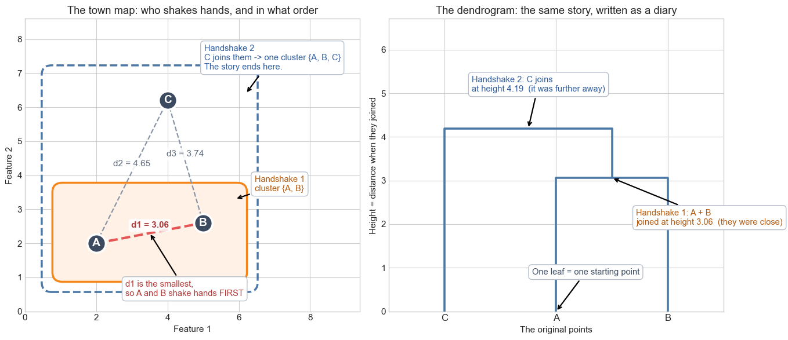
In [6]cell 14
# Replay the story one handshake at a time.
Z = linkage(points, method="ward", metric="euclidean")
n = len(points)
groups = {i: [i] for i in range(n)}
history = []
for step, row in enumerate(Z, start=1):
a, b, dist = int(row[0]), int(row[1]), row[2]
left, right = groups.pop(a), groups.pop(b)
groups[n + step - 1] = left + right
history.append({"step": step, "dist": dist, "left": left, "right": right,
"groups": [list(g) for g in groups.values()]})
palette = ["#4C78A8", "#54A24B", "#B279A2", "#9D755D", "#72B7B2",
"#EECA3B", "#FF9DA6", "#8995A7", "#5C6B7F"]
fig, axes = plt.subplots(2, 4, figsize=(17, 8.5))
for ax, snap in zip(axes.ravel(), history):
joined = set(snap["left"] + snap["right"])
for members in snap["groups"]:
colour = palette[min(members) % len(palette)] # a group keeps its colour as it grows
block = points[members]
centre = block.mean(axis=0)
if len(members) > 1: # show the group as a small star
for px, py in block:
ax.plot([px, centre[0]], [py, centre[1]], color=colour, linewidth=1.1, alpha=.55)
ax.scatter(block[:, 0], block[:, 1], s=95, color=colour,
edgecolor="white", linewidth=1.2, zorder=4)
left_centre = points[snap["left"]].mean(axis=0) # the handshake that just happened
right_centre = points[snap["right"]].mean(axis=0)
ax.plot([left_centre[0], right_centre[0]], [left_centre[1], right_centre[1]],
linestyle="--", color="#E45756", linewidth=2.6, zorder=6)
ax.scatter([left_centre[0], right_centre[0]], [left_centre[1], right_centre[1]],
s=140, facecolor="none", edgecolor="#E45756", linewidth=2.4, zorder=7)
ax.set_title(f"Handshake {snap['step']} · join height {snap['dist']:.1f}\n"
f"{len(snap['groups'])} group(s) left", fontsize=10.5)
ax.set_xlim(-8, 100); ax.set_ylim(-8, 95)
ax.set_xticks([]); ax.set_yticks([])
first_mid = points[history[0]["left"] + history[0]["right"]].mean(axis=0)
axes.ravel()[0].annotate("The two closest\ngroups join here",
xy=tuple(first_mid), xytext=(34, 52),
textcoords="offset points", fontsize=9.5, color="#B03A39",
arrowprops=dict(arrowstyle="->", linewidth=1.5, color="#B03A39"),
bbox=dict(boxstyle="round,pad=0.35", facecolor="white", edgecolor="#E45756"))
last_mid = points[history[-1]["left"] + history[-1]["right"]].mean(axis=0)
axes.ravel()[-1].annotate("Everyone is\none group.\nStory over.",
xy=tuple(last_mid), xytext=(30, -60), textcoords="offset points",
fontsize=9.5, color="#2F5D9E",
arrowprops=dict(arrowstyle="->", linewidth=1.5, color="#2F5D9E"),
bbox=dict(boxstyle="round,pad=0.35", facecolor="white", edgecolor="#4C78A8"))
fig.suptitle("Red dashed line = the handshake that just happened. "
"Each colour = a group that exists right now.", fontsize=13, y=1.0)
fig.tight_layout()
plt.show()
for snap in history:
print(f"handshake {snap['step']}: joined {[point_names[i] for i in snap['left']]} "
f"+ {[point_names[i] for i in snap['right']]} at height {snap['dist']:.2f}")Output
handshake 1: joined ['P2'] + ['P3'] at height 5.83 handshake 2: joined ['P7'] + ['P8'] at height 11.18 handshake 3: joined ['P4'] + ['P2', 'P3'] at height 13.88 handshake 4: joined ['P1'] + ['P4', 'P2', 'P3'] at height 17.98 handshake 5: joined ['P6'] + ['P9'] at height 21.21 handshake 6: joined ['P7', 'P8'] + ['P6', 'P9'] at height 28.85 handshake 7: joined ['P5'] + ['P1', 'P4', 'P2', 'P3'] at height 32.80 handshake 8: joined ['P7', 'P8', 'P6', 'P9'] + ['P5', 'P1', 'P4', 'P2', 'P3'] at height 166.17
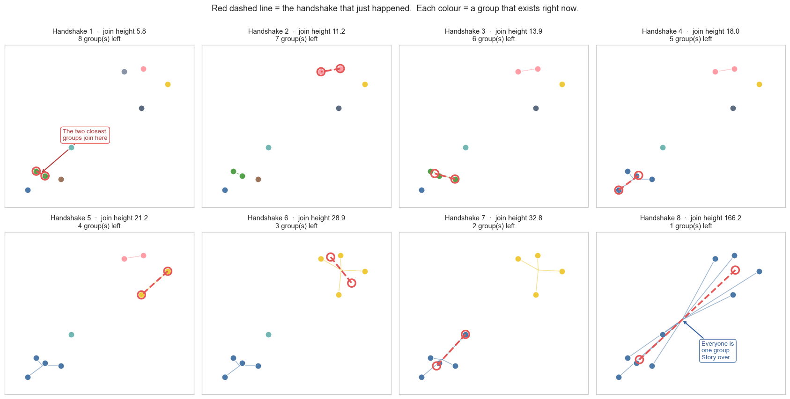
In [7]cell 17
from matplotlib.patches import Ellipse
rng = np.random.default_rng(7)
blob_left = rng.normal([3.0, 5.0], [0.85, 0.9], size=(6, 2))
blob_right = rng.normal([10.5, 5.2], [0.85, 0.9], size=(6, 2))
cross = np.linalg.norm(blob_left[:, None, :] - blob_right[None, :, :], axis=2)
near_i, near_j = np.unravel_index(cross.argmin(), cross.shape)
far_i, far_j = np.unravel_index(cross.argmax(), cross.shape)
def draw_blobs(ax):
for blob, colour in [(blob_left, "#4C78A8"), (blob_right, "#F58518")]:
centre, spread = blob.mean(axis=0), blob.std(axis=0)
ax.add_patch(Ellipse(centre, spread[0] * 5.2, spread[1] * 5.2, facecolor=colour,
alpha=.13, edgecolor=colour, linewidth=2))
ax.scatter(blob[:, 0], blob[:, 1], s=70, color=colour,
edgecolor="white", linewidth=1.1, zorder=4)
ax.set_xlim(0, 14); ax.set_ylim(1.5, 9)
ax.set_xticks([]); ax.set_yticks([])
note = dict(fontsize=10, ha="center",
bbox=dict(boxstyle="round,pad=0.35", facecolor="white", edgecolor="#B8C0CC"))
fig, axes = plt.subplots(2, 2, figsize=(13.5, 8))
ax1, ax2, ax3, ax4 = axes.ravel()
# --- Single: the two nearest members decide ---
draw_blobs(ax1)
ax1.plot([blob_left[near_i, 0], blob_right[near_j, 0]],
[blob_left[near_i, 1], blob_right[near_j, 1]], color="#E45756", linewidth=3, zorder=5)
ax1.scatter([blob_left[near_i, 0], blob_right[near_j, 0]],
[blob_left[near_i, 1], blob_right[near_j, 1]],
s=190, facecolor="none", edgecolor="#E45756", linewidth=2.4, zorder=6)
ax1.text(7, 2.4, f"the NEAREST pair decides -> {cross.min():.2f}", color="#B03A39", **note)
ax1.set_title("Single linkage - our two closest members", fontsize=12)
# --- Complete: the two farthest members decide ---
draw_blobs(ax2)
ax2.plot([blob_left[far_i, 0], blob_right[far_j, 0]],
[blob_left[far_i, 1], blob_right[far_j, 1]], color="#B279A2", linewidth=3, zorder=5)
ax2.scatter([blob_left[far_i, 0], blob_right[far_j, 0]],
[blob_left[far_i, 1], blob_right[far_j, 1]],
s=190, facecolor="none", edgecolor="#B279A2", linewidth=2.4, zorder=6)
ax2.text(7, 2.4, f"the FARTHEST pair decides -> {cross.max():.2f}", color="#7B4B70", **note)
ax2.set_title("Complete linkage - our two most distant members", fontsize=12)
# --- Average: every pair votes ---
draw_blobs(ax3)
for a in blob_left:
for b in blob_right:
ax3.plot([a[0], b[0]], [a[1], b[1]], color="#54A24B", linewidth=.6, alpha=.45, zorder=3)
ax3.text(7, 2.4, f"all {cross.size} pairs, then take the mean -> {cross.mean():.2f}",
color="#3B7A34", **note)
ax3.set_title("Average linkage - the average of every pair", fontsize=12)
# --- Centroid: only the two centres matter ---
draw_blobs(ax4)
c_left, c_right = blob_left.mean(axis=0), blob_right.mean(axis=0)
ax4.plot([c_left[0], c_right[0]], [c_left[1], c_right[1]],
color="#3B4A5F", linewidth=3, zorder=5)
ax4.scatter([c_left[0], c_right[0]], [c_left[1], c_right[1]], marker="X", s=260,
color="#3B4A5F", edgecolor="white", linewidth=1.6, zorder=6)
ax4.annotate("centre of the\nleft group", xy=tuple(c_left), xytext=(-6, -52),
textcoords="offset points", fontsize=9.5, ha="center",
arrowprops=dict(arrowstyle="->", linewidth=1.4))
ax4.annotate("centre of the\nright group", xy=tuple(c_right), xytext=(6, 40),
textcoords="offset points", fontsize=9.5, ha="center",
arrowprops=dict(arrowstyle="->", linewidth=1.4))
ax4.text(7, 2.4, f"centre to centre -> {np.linalg.norm(c_left - c_right):.2f}",
color="#3B4A5F", **note)
ax4.set_title("Centroid linkage - middle of us to middle of you", fontsize=12)
fig.suptitle("Same two groups, four different answers to: how far apart are you?", fontsize=14)
fig.tight_layout()
plt.show()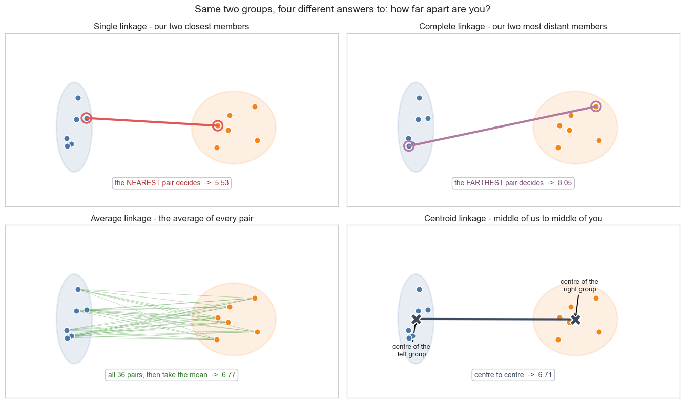
In [8]cell 19
# The linkage matrix stores the complete merge history.
linkage_matrix = linkage(points, method="ward", metric="euclidean")
cut_height = 80
fig, ax = plt.subplots(figsize=(11, 6))
dendrogram(
linkage_matrix,
labels=point_names,
color_threshold=cut_height,
above_threshold_color="#9AA0A6",
leaf_font_size=11,
ax=ax
)
ax.axhline(
cut_height, color="#E45756", linestyle="--", linewidth=2,
label=f"Cut at height {cut_height}"
)
ax.set(
title="Ward dendrogram: the full joining story",
xlabel="Original data points",
ylabel="Merge distance (dissimilarity)"
)
ax.legend(loc="upper left")
plt.show()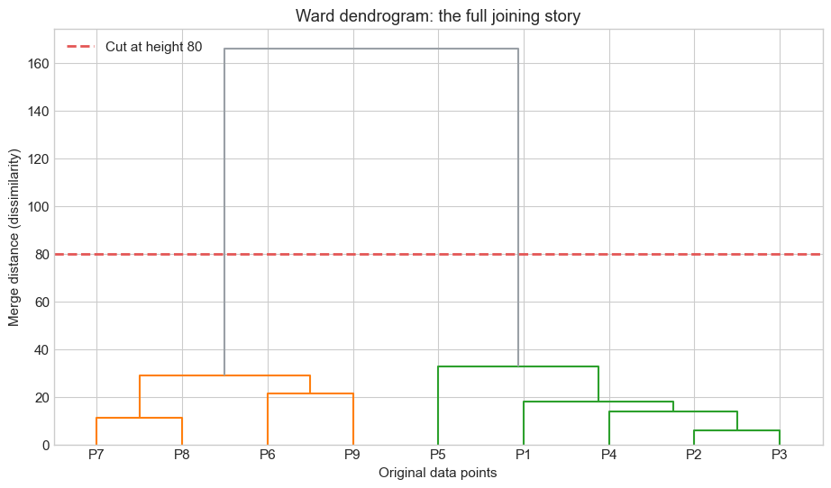
In [9]cell 21
Z = linkage(points, method="ward", metric="euclidean")
fig, ax = plt.subplots(figsize=(13, 7.5))
tree = dendrogram(Z, labels=point_names, ax=ax, color_threshold=0,
above_threshold_color="#4C78A8", leaf_font_size=12)
for coll in ax.collections:
coll.set_linewidth(2.4)
bars = sorted(zip(tree["dcoord"], tree["icoord"]), key=lambda t: max(t[0]))
def bar_top(bar):
dcoord, icoord = bar
return float(np.mean(icoord[1:3])), float(max(dcoord))
lowest_x, lowest_y = bar_top(bars[0])
second_x, second_y = bar_top(bars[-2])
top_x, top_y = bar_top(bars[-1])
pin = dict(fontsize=10.5, arrowprops=dict(arrowstyle="->", linewidth=1.8, color="#3B4A5F"),
bbox=dict(boxstyle="round,pad=0.45", facecolor="white", edgecolor="#8995A7"))
ax.annotate("1. One leaf = one original point.\n Everybody starts alone down here.",
xy=(tree["icoord"][0][0], 0), xytext=(-24, 66), textcoords="offset points", **pin)
ax.annotate(f"2. A flat bar = one handshake.\n P2 and P3 joined first, at height {lowest_y:.1f}.",
xy=(lowest_x, lowest_y), xytext=(-6, 78), textcoords="offset points", **pin)
ax.annotate("3. A tall vertical line means\n 'still waiting, nobody near me yet'.",
xy=(tree["icoord"][-1][0], top_y * 0.45), xytext=(30, 30),
textcoords="offset points", **pin)
ax.annotate(f"4. The last handshake, way up at {top_y:.0f}.\n The two sides were very different.",
xy=(top_x, top_y), xytext=(-330, -34), textcoords="offset points", **pin)
ax.annotate("", xy=(top_x + 20, top_y), xytext=(top_x + 20, second_y),
arrowprops=dict(arrowstyle="<->", linewidth=2.4, color="#E45756"))
ax.text(top_x + 26, (top_y + second_y) / 2,
"5. A LONG empty gap.\n Nothing merged for a long time.\n"
" This is the natural place to cut.",
fontsize=10.5, color="#B03A39", va="center",
bbox=dict(boxstyle="round,pad=0.45", facecolor="#FFF3F3", edgecolor="#E45756"))
ax.annotate("Height axis = how far apart two groups were\nat the moment they joined.\n"
"Low = very similar. High = very different.",
xy=(0.012, 0.62), xycoords="axes fraction", fontsize=10.5, color="#2F5D9E",
rotation=0, bbox=dict(boxstyle="round,pad=0.45", facecolor="#EAF2FF",
edgecolor="#4C78A8"))
ax.set(title="How to read a dendrogram, part by part",
xlabel="The 9 original points", ylabel="Height (Ward merge cost)")
ax.set_xlim(-5, 105)
ax.set_ylim(0, top_y * 1.12)
plt.show()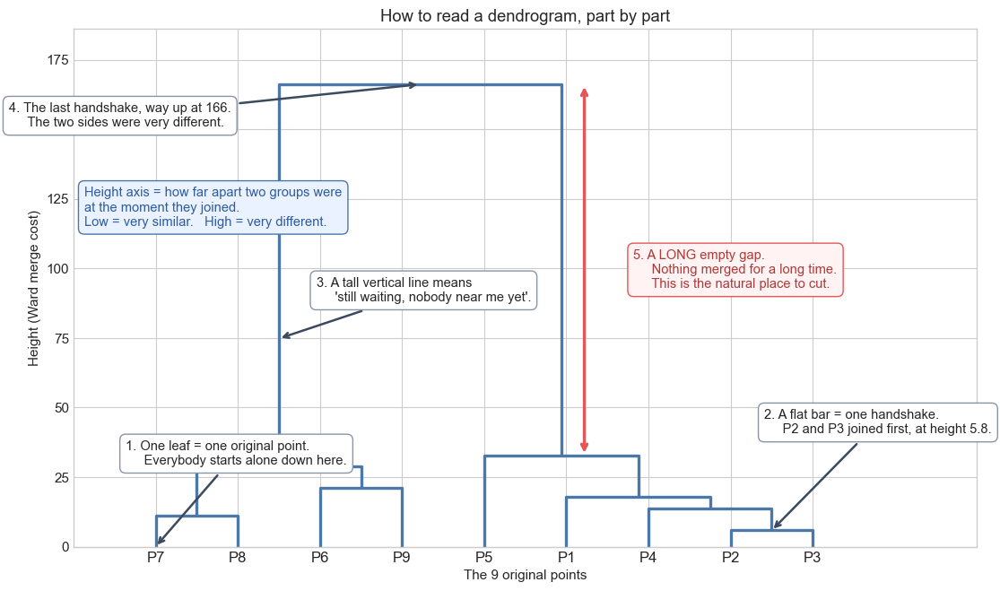
In [10]cell 24
from scipy.cluster.hierarchy import fcluster
Z = linkage(points, method="ward", metric="euclidean")
cut_height = 90 # anywhere inside the long empty gap works
fig, (ax_tree, ax_map) = plt.subplots(1, 2, figsize=(15, 6.5))
# ---------- LEFT: cut the diary ----------
tree = dendrogram(Z, labels=point_names, ax=ax_tree, color_threshold=cut_height,
above_threshold_color="#8995A7", leaf_font_size=11)
for coll in ax_tree.collections:
coll.set_linewidth(2.4)
ax_tree.axhline(cut_height, color="#E45756", linestyle="--", linewidth=2.6)
crossings = [] # where the scissors actually cut a branch
for xs, ys in zip(tree["icoord"], tree["dcoord"]):
for x, low, high in [(xs[0], ys[0], ys[1]), (xs[3], ys[3], ys[2])]:
if low < cut_height < high:
crossings.append(x)
for x in crossings:
ax_tree.scatter(x, cut_height, s=200, color="#E45756", zorder=8,
edgecolor="white", linewidth=2)
ax_tree.annotate(f"Cut here, at height {cut_height}",
xy=(3, cut_height), xytext=(6, 16), textcoords="offset points",
color="#B03A39", fontsize=11, fontweight="bold")
for n, x in enumerate(sorted(crossings), start=1):
ax_tree.annotate(f"cut {n}", xy=(x, cut_height), xytext=(-14, -44),
textcoords="offset points", fontsize=10.5, color="#B03A39",
arrowprops=dict(arrowstyle="->", linewidth=1.6, color="#E45756"),
bbox=dict(boxstyle="round,pad=0.3", facecolor="white", edgecolor="#E45756"))
ax_tree.set(title=f"Cut the tree -> the scissors hit {len(crossings)} branches",
xlabel="The 9 original points", ylabel="Height (Ward merge cost)")
ax_tree.set_ylim(0, max(max(d) for d in tree["dcoord"]) * 1.1)
# ---------- RIGHT: the groups that fall out ----------
labels = fcluster(Z, t=cut_height, criterion="distance")
# Borrow the exact branch colour the dendrogram used, so both panels agree.
leaf_colour = dict(zip(tree["ivl"], tree["leaves_color_list"]))
colours = {label: leaf_colour[name]
for name, label in zip(point_names, labels)}
for label in np.unique(labels):
block = points[labels == label]
ax_map.scatter(block[:, 0], block[:, 1], s=170, color=colours[label],
edgecolor="white", linewidth=1.6, zorder=4,
label=f"Group {label} ({(labels == label).sum()} points)")
centre = block.mean(axis=0)
ax_map.annotate(f"Group {label} = " + ", ".join(np.array(point_names)[labels == label]),
xy=tuple(centre), xytext=(0, 62 if label == 1 else -78),
textcoords="offset points", ha="center", fontsize=10.5,
color=colours[label],
arrowprops=dict(arrowstyle="->", linewidth=1.6, color=colours[label]),
bbox=dict(boxstyle="round,pad=0.4", facecolor="white",
edgecolor=colours[label]))
for name, (x, y) in zip(point_names, points):
ax_map.annotate(name, (x, y), xytext=(8, 7), textcoords="offset points", fontsize=9.5)
ax_map.set(title=f"{len(crossings)} branches cut -> {len(crossings)} groups on the map",
xlabel="Feature 1", ylabel="Feature 2")
ax_map.set_xlim(-5, 105); ax_map.set_ylim(-15, 105)
ax_map.legend(loc="lower right")
fig.tight_layout()
plt.show()
print(f"cut height {cut_height} -> {len(np.unique(labels))} clusters")
for label in np.unique(labels):
print(f" group {label}: {', '.join(np.array(point_names)[labels == label])}")Output
cut height 90 -> 2 clusters group 1: P6, P7, P8, P9 group 2: P1, P2, P3, P4, P5
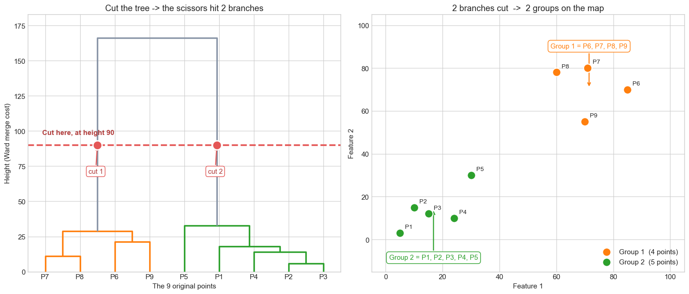
In [11]cell 26
model = AgglomerativeClustering(n_clusters=2, linkage="ward")
cluster_ids = model.fit_predict(points)
colors = ["#4C78A8", "#F58518"]
fig, ax = plt.subplots(figsize=(10, 6))
for cluster_id in np.unique(cluster_ids):
mask = cluster_ids == cluster_id
cluster_points = points[mask]
center = cluster_points.mean(axis=0)
ax.scatter(
cluster_points[:, 0], cluster_points[:, 1],
s=150, color=colors[cluster_id], edgecolor="white", linewidth=1.5,
label=f"Cluster {cluster_id + 1}"
)
ax.scatter(
center[0], center[1], marker="X", s=260,
color=colors[cluster_id], edgecolor="black", linewidth=1.2
)
for name, (x, y) in zip(point_names, points):
ax.annotate(name, (x, y), xytext=(7, 7), textcoords="offset points")
ax.set(
title="Final result: two clearly separated clusters",
xlabel="Feature 1", ylabel="Feature 2"
)
ax.legend(title="Model assignment")
plt.show()
for cluster_id in np.unique(cluster_ids):
members = [name for name, label in zip(point_names, cluster_ids) if label == cluster_id]
print(f"Cluster {cluster_id + 1}: {', '.join(members)}")Output
Cluster 1: P1, P2, P3, P4, P5 Cluster 2: P6, P7, P8, P9
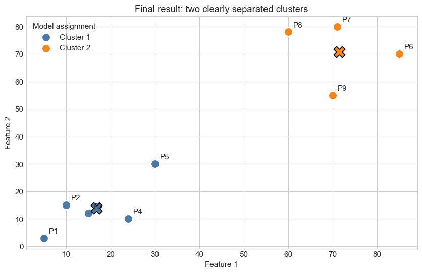
In [12]cell 29
methods = ["single", "complete", "average", "ward"]
fig, axes = plt.subplots(2, 2, figsize=(14, 9))
for ax, method in zip(axes.ravel(), methods):
method_matrix = linkage(points, method=method, metric="euclidean")
dendrogram(
method_matrix, labels=point_names, leaf_font_size=9,
above_threshold_color="#6B7280", ax=ax
)
ax.set_title(f"{method.title()} linkage")
ax.set_xlabel("Points")
ax.set_ylabel("Merge distance")
fig.suptitle("One dataset, four ways to define distance between groups", fontsize=15, y=1.02)
fig.tight_layout()
plt.show()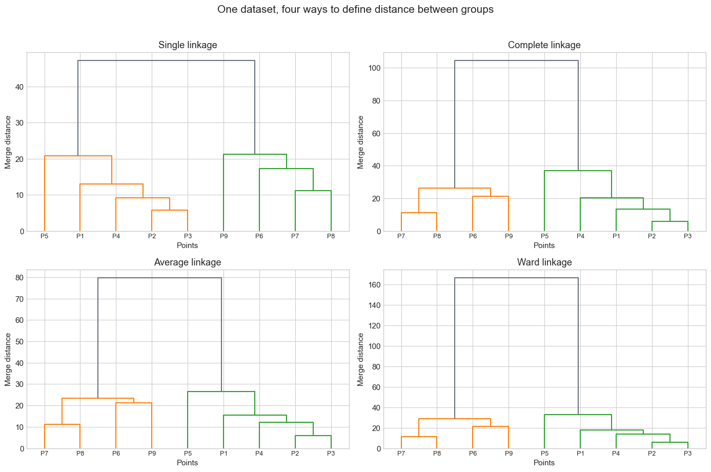